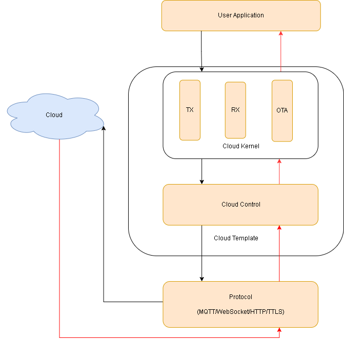

Cloud

Cloud Template
Cloud Template is a template architecture that help developer to integrate the device with the public/private cloud service and achieve the low power consumption and short latency purpose. There two components in Cloud Template, the Cloud Kernel and Cloud Control. Three tasks will be created in Cloud Kernel, they are Cloud TX task, Cloud RX task, and Cloud OTA task. Cloud Control is responsible for grafting Cloud Kernel and Protocol. Following starts the initialization of cloud template in application.
void APP_CldInit(void)
{
// user implement
Cloud_Init();
}
The Cloud Tx task and Cloud RX task will be initiated in Cloud_Init. The Cloud OTA task is optional.
void Cloud_Init(void)
{
// create event group
EG_Create(&g_tCloudEventGroup);
// init tx task
Cloud_TxTaskInit();
// init rx task
Cloud_RxTaskInit();
// init ota http task
#if (CLOUD_OTA_ENABLED == 1)
Cloud_OtaTaskInit();
#endif
}
Several events can be handled in Cloud TX task, such establishing a connection with the cloud, disconnecting with the cloud, binding to the cloud, keeping alive with the cloud, waiting for the ack of the cloud and posting to cloud. How many events should be handled is depends on the features of the cloud to port. For example, the cloud establish event in the cloud template example. The Cloud TX task will receive cloud events, and execute the correspnding handlers found in event table g_tCloudTxEvtHandlerTbl. These handlers are responsible for executing cloud events through calling Protocol API. These handlers are located at Cloud Control.
static T_CloudTxEvtHandlerTbl g_tCloudTxEvtHandlerTbl[] =
{
{CLOUD_EVT_TYPE_INIT, Cloud_InitHandler},
{CLOUD_EVT_TYPE_ESTABLISH, Cloud_EstablishHandler},
{CLOUD_EVT_TYPE_DISCONNECT, Cloud_DisconnectHandler},
{CLOUD_EVT_TYPE_TIMEOUT, Cloud_TimeoutHandler},
{CLOUD_EVT_TYPE_BINDING, Cloud_BindingHandler},
{CLOUD_EVT_TYPE_KEEP_ALIVE, Cloud_KeepAliveHandler},
{CLOUD_EVT_TYPE_ACK, Cloud_AckHandler},
{CLOUD_EVT_TYPE_POST, Cloud_PostHandler},
#if (CLOUD_TX_DATA_BACKUP_ENABLED == 1)
{CLOUD_EVT_TYPE_POST_BACKUP, Cloud_PostBackupHandler},
#endif
};
Cloud_EstablishHandler (Cloud Control) can handle to establish connection with the cloud. The developer can call Protocol API to achieve cloud connection in Cloud_EstablishHandler.
void Cloud_EstablishHandler(uint32_t u32EventId, void *pData, uint32_t u32DataLen)
{
// user implement
// 1. establish connection
// 2. determine the connect status
// if connect success - set connection status as online
// Cloud_OnlineStatusSet(true);
// if connect fail
// error handle - call retry connection timer
// osTimerStart(g_tCloudConnectRetryTimer, ConnRetryDuration);
// 3. if connect success, start keep alive timer
// Cloud_TimerStart(CLOUD_TMR_KEEP_ALIVE, CLOUD_KEEP_ALIVE_TIME);
}
Cloud_DisconnectHandler (Cloud Control) can handle to dsiconnect the cloud. The developer can call Protocol API to achieve cloud disconnection in Cloud_DisconnectHandler.
void Cloud_DisconnectHandler(uint32_t u32EventId, void *pData, uint32_t u32DataLen)
{
// user implement
// 1. close connection
// 2. determine the disconnect result and change the connection status
// if disconnect success - set connection status as offline
// Cloud_OnlineStatusSet(false);
// if disconnect fail
// error handle
// 3. if disconnect success, stop keep alive timer
// Cloud_TimerStop(CLOUD_TMR_KEEP_ALIVE);
}
Cloud_BindingHandler (Cloud Control) can handle to bind the cloud. The developer can call Protocol API to achieve cloud binding in Cloud_BindingHandler.
void Cloud_BindingHandler(uint32_t u32EventId, void *pData, uint32_t u32DataLen)
{
// check connection first
if(false == Cloud_OnlineStatusGet())
{
OPL_LOG_INFO(CLOUD, "Cloud disconnected");
}
// user implement
// 1. binding process
}
Cloud_KeepAliveHandler (Cloud Control) can handle to keep alive with the cloud. The developer can call Protocol API to achieve keeping alive with the cloud in Cloud_KeepAliveHandler.
void Cloud_KeepAliveHandler(uint32_t u32EventId, void *pData, uint32_t u32DataLen)
{
// check connection first
if(false == Cloud_OnlineStatusGet())
{
OPL_LOG_INFO(CLOUD, "Cloud disconnected");
}
// user implement
// 1. post keep alive data
// 2. restart keep alive timer
// Cloud_TimerStart(CLOUD_TMR_KEEP_ALIVE, CLOUD_KEEP_ALIVE_TIME);
}
Cloud_AckHandler (Cloud Control) can handle to post ack to the cloud. The developer can call Protocol API to achieve to post ack to the cloud in Cloud_AckHandler.
void Cloud_AckHandler(uint32_t u32EventId, void *pData, uint32_t u32DataLen)
{
// check connection first
if(false == Cloud_OnlineStatusGet())
{
OPL_LOG_INFO(CLOUD, "Cloud disconnected");
}
// user implement
// 1. post ack data
}
Cloud_PostHandler (Cloud Control) can handle to post data to the cloud. The developer can call Protocol API to achieve to post data to the cloud in Cloud_PostHandler.
void Cloud_PostHandler(uint32_t u32EventId, void *pData, uint32_t u32DataLen)
{
// check connection first
if(false == Cloud_OnlineStatusGet())
{
OPL_LOG_INFO(CLOUD, "Cloud disconnected");
}
// user implement
#if (CLOUD_TX_DATA_BACKUP_ENABLED == 1)
// 1. create your own scenario to backup data by using RingBuf (Cloud_RingBuf___)
// 2. construct data for post (if required)
// Cloud_DataConstruct(pData, u32DataLen);
// 3. post data
// 4. send event CLOUD_EVT_TYPE_POST_BACKUP if RingBuf not empty
#else
// 1. construct income data for post (if required)
// Cloud_DataConstruct(pData, u32DataLen);
// 2. post data
#endif /* CLOUD_TX_DATA_BACKUP_ENABLED */
}
Please refer to OTA ("OTA via WI-FI") about CLOUD OTA.
How To...
How to port public/private cloud that utilizes Cloud Template
The developer can copy the folder quick_dev\app_ref\cloud\cloud_template to quick_dev\app_ref\cloud that copied folder could rename my_cloud to execute cloud process. There are two important files cloud_kernel.c (Cloud Kernel) & cloud_ctrl.c (Cloud Control). Cloud Kernel is responsible for receiving cloud events and data, then passing to these event's handlers. These handlers are located at Cloud Control. In cloud_kernel.c (Cloud Kernel), there are two components that are Cloud_TxTaskHandler (Cloud TX) and Cloud_RxTaskHandler (Cloud RX).
- Cloud TX process
Cloud_TxTaskHandler is based on the cloud kernel event table g_tCloudTxEvtHandlerTbl. Some important events that are CLOUD_EVT_TYPE_ESTABLISH (establish connection with the cloud), CLOUD_EVT_TYPE_DISCONNECT (disconnect to the cloud), CLOUD_EVT_TYPE_KEEP_ALIVE (keep alive with the cloud), CLOUD_EVT_TYPE_ACK (response ack to the cloud) and CLOUD_EVT_TYPE_POST (post data to the cloud). There are the corresponding handlers (Cloud Control) to handle these events and pass to protocol to execute cloud kernel event.
// cloud kernel event table
static T_CloudTxEvtHandlerTbl g_tCloudTxEvtHandlerTbl[] =
{
{CLOUD_EVT_TYPE_INIT, Cloud_InitHandler},
{CLOUD_EVT_TYPE_ESTABLISH, Cloud_EstablishHandler},
{CLOUD_EVT_TYPE_DISCONNECT, Cloud_DisconnectHandler},
{CLOUD_EVT_TYPE_TIMEOUT, Cloud_TimeoutHandler},
{CLOUD_EVT_TYPE_BINDING, Cloud_BindingHandler},
{CLOUD_EVT_TYPE_KEEP_ALIVE, Cloud_KeepAliveHandler},
{CLOUD_EVT_TYPE_ACK, Cloud_AckHandler},
{CLOUD_EVT_TYPE_POST, Cloud_PostHandler},
#if (CLOUD_TX_DATA_BACKUP_ENABLED == 1)
{CLOUD_EVT_TYPE_POST_BACKUP, Cloud_PostBackupHandler},
#endif
};
For example, if wnating to post datas to the cloud (TCP Cloud), the developer send post events and data from application to Cloud Kernel (Cloud TX task). Cloud TX task could gets these event and data to pass the corresponding handler Cloud_PostHandler. Cloud_PostHandler would construct data and pass data to Cloud_PostData.
void Cloud_PostData(uint8_t *pu8Data, uint32_t u32DataLen)
{
int32_t i32Ret = 0;
Opl_Wifi_Skip_Dtim_Set(g_u16CloudTcpSkipDtimId, false);
osSemaphoreWait(g_tCloudSemaphoreId, osWaitForever);
if(g_i32TcpTxId != g_i32TcpHdlId)
{
g_i32TcpTxId = g_i32TcpHdlId;
}
osSemaphoreRelease(g_tCloudSemaphoreId);
i32Ret = TCP_Send(g_ptrCloudTcpHdlId, (const char *)pu8Data, u32DataLen, TCP_TX_POST_TIMEOUT);
if(i32Ret <= 0)
{
OPL_LOG_ERRO(CLOUD, "post fail (ret %d)", i32Ret);
osSemaphoreWait(g_tCloudSemaphoreId, osWaitForever);
if(((uintptr_t)-1 != g_ptrCloudTcpHdlId) &&
(g_i32TcpHdlId == g_i32TcpTxId) &&
(true == Cloud_OnlineStatusGet()))
{
uint8_t u8ReConnect = true;
Cloud_MsgSend(CLOUD_EVT_TYPE_DISCONNECT, &u8ReConnect, sizeof(u8ReConnect));
g_ptrCloudTcpHdlId = (uintptr_t)-1;
g_i32TcpHdlId = -1;
g_i32TcpTxId = -1;
}
osSemaphoreRelease(g_tCloudSemaphoreId);
}
OPL_LOG_INFO(CLOUD, "post: %s (%d)", pu8Data, u32DataLen);
Opl_Wifi_Skip_Dtim_Set(g_u16CloudTcpSkipDtimId, true);
}
Cloud_PostData call TCP_Send (Cloud Control) to send data to send (TCP Protocol).
int TCP_Send(uintptr_t fd, const char *buf, uint32_t len, uint32_t timeout_ms)
{
int ret;
uint32_t len_sent;
int net_err = 0;
struct timeval timeout;
timeout.tv_sec = timeout_ms/1000;
timeout.tv_usec = (timeout_ms - (timeout.tv_sec * 1000)) * 1000;
if (setsockopt(fd, SOL_SOCKET, SO_SNDTIMEO, &timeout, sizeof(timeout)) < 0)
{
OPL_LOG_WARN(TCP, "failed to set socket sending timeout");
net_err = -2;
return net_err;
}
ret = send(fd, buf, len, 0);
if (ret > 0)
{
len_sent += ret;
}
else if (0 == ret)
{
OPL_LOG_WARN(TCP, "no data to send");
}
else
{
OPL_LOG_ERRO(TCP, "send data fail fd: fd[%d] ret[%d] %s", fd, ret, strerror(errno));
net_err = 1;
}
if (net_err)
{
return -1;
}
else
{
return len_sent;
}
}
- Cloud RX process
In cloud_kernel.c (Cloud Kernel), Cloud RX execute in Cloud_ReceiveHandler. Cloud_ReceiveHandler would call TCP_Recv
(Cloud Control) to receive data from protocol.
For example, if receiving data from the cloud (TCP CLOUD), the developer could use TCP_Recv (Cloud Control) call select (TCP protocol) to receive data and pass to Cloud_ReceiveHandler (Cloud Kernel).
nt TCP_Recv(uintptr_t fd, char *buf, uint32_t len, uint32_t timeout_ms)
{
int ret, err_code;
uint32_t len_recv;
fd_set sets;
struct timeval timeout;
len_recv = 0;
err_code = 0;
FD_ZERO(&sets);
FD_SET(fd, &sets);
timeout.tv_sec = timeout_ms/1000;
timeout.tv_usec = (timeout_ms - (timeout.tv_sec * 1000)) * 1000;
ret = select(fd + 1, &sets, NULL, NULL, &timeout);
if (ret > 0)
{
if (FD_ISSET(fd, &sets))
{
ret = recv(fd, buf, len, 0);
if (ret > 0)
{
len_recv += ret;
}
else if (0 == ret)
{
OPL_LOG_DEBG(TCP, "connection is closed");
err_code = -1;
}
else
{
OPL_LOG_ERRO(TCP, "recv data fail: fd[%d] ret[%d] %s", fd, ret, strerror(errno));
err_code = -2;
}
}
}
else if (0 == ret)
{
// printf("select-recv return 0\n"); //select timeout, nothing to do
}
else
{
//if (EINTR == errno) {
// continue;
//}
OPL_LOG_ERRO(TCP, "select-recv fail: fd[%d] ret[%d] %s", fd, ret, strerror(errno));
err_code = -2;
}
/* priority to return data bytes if any data be received from TCP connection. */
/* It will get error code on next calling */
return (0 != len_recv) ? len_recv : err_code;
}